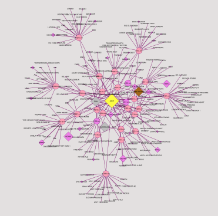
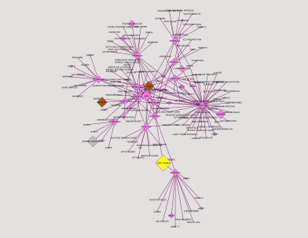

Can we identify which character is speaking based only on dialogue
patterns? We would analyze 3–5 specific characters and compare their
language use across episodes. Some patterns we could look at: Word
frequency, catchphrase detection, sentence length, emotional tone. We also want to figure out differences from the
pilot episode all the way to the finale. We can do this by making
separate code for both season 1 and 10.
Legend
This symbolizes an episode node. There are 26 episodes in season 1
and 13 in season 10.
This symbolizes a character node. The larger the size, the more the
character speaks.
Yellow Fill
If a node is filled in yellow, then it has the most total
speeches.
Grey Fill
If a node is filled in grey, then it has the second most total
speeches.
Brown Fill
If a node is filled in brown, then it has the third most total
speeches.
Season 1 CytoScape Model

We ranked the top 3 speakers within season 1, indicated by a gold, silver
or brown complexion. In first we have Jake (68), tied for second we have
Finn and Marceline (48), and finally Tree Trunks (46).
Season 10 CytoScape Model

This is our Cytoscape creation for season 10 of Adventure Time, the final
season. As you can see, for the final episode, there are so many speakers.
This means that all the characters returned for the final episode. Ranked
for number of speeches: first Tree Trunks (62), second Warren Ampersand
(43), and finally a tie in 3rd Hunson and Finn (40).
Conclusion
Season 1
Dialogue is heavily concentrated around a few main characters:
Finn the Human
Jake the Dog
Episodes are more episodic and simple, so most lines go to the main duo.
Side characters appear, but they don’t carry much dialogue weight. Nodes are
really big for Finn and Jake and mostly really small for other characters.
Many small, less connected nodes.
Season 10 (Final Season)
Dialogue becomes much more spread out across many characters. Side
characters become central to the story:
Princess Bubblegum
Marceline
Ice King
Tree Trunks
More medium-sized nodes instead of just a few huge ones. More connections
between different characters (not just Finn/Jake).
Season 1: Main-character driven (Finn and Jake dominate)
Final Season: Ensemble cast (many characters share
importance)